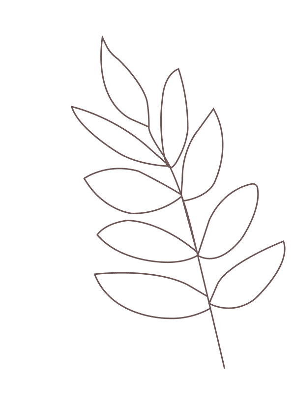

Meer over mij en wat zoek ik?
Ik ben 21 jarige, tweedejaarsstudent op de opleiding communication and multimedia design. Ik zal mijzelf omschrijven als een leergierig, ambiteus en iemand die initiatief zal nemen. Voor mijn tweede jaar ben ik opzoek naar een stage van tien weken. Bij een bedrijf dat mij een mogelijkheid kan bieden om mij verder te ontwikkelen met coderen, maar ook op visueel vlak. Graag zoek ik een plek die mij deze begeleiding kan bieden en natuurlijk een gezellige sfeer heeft.
